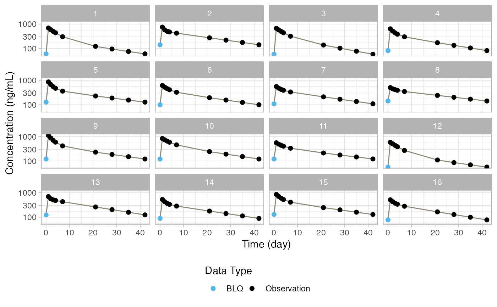

Takes the current state and object type and returns the currently selected object. For example if you have specified figure, it will look at the output figure selected and the figure number of that figure and return the ggplot object for that. by subject id highlighting of certain NCA aspects (e.g. points used for half-life)
Arguments
- state
NCA state from
NCA_fetch_state()- obj_type
Type of object to return (either "table" or "figure").
Value
List with a format that depends on the obj_type. For figures:
ggplot: ggplot object of the figure.
isgood: Return status of the function.
msgs: Messages to be passed back to the user.
For tables:
df: Dataframe of the current table.
ft: Flextable object of the current table.
notes: Any table notes to be included.
isgood: Return status of the function.
msgs: Messages to be passed back to the user.
Examples
# We need a state object to use below
sess_res = NCA_test_mksession()
#> → ASM: including file
#> → ASM: source: file.path(system.file(package="onbrand"), "templates", "report.docx")
#> → ASM: dest: file.path("config","report.docx")
#> → ASM: including file
#> → ASM: source: file.path(system.file(package="onbrand"), "templates", "report.pptx")
#> → ASM: dest: file.path("config","report.pptx")
#> → ASM: including file
#> → ASM: source: file.path(system.file(package="onbrand"), "templates", "report.yaml")
#> → ASM: dest: file.path("config","report.yaml")
#> → ASM: State initialized
#> → ASM: setting word placeholders:
#> → ASM: -> setting docx ph: HEADERLEFT = left header
#> → ASM: -> setting docx ph: HEADERRIGHT = right header
#> → ASM: -> setting docx ph: FOOTERLEFT = left footer
#> → ASM: module isgood: TRUE
#> → UD: including file
#> → UD: source: file.path(system.file(package="onbrand"), "templates", "report.docx")
#> → UD: dest: file.path("config","report.docx")
#> → UD: including file
#> → UD: source: file.path(system.file(package="onbrand"), "templates", "report.pptx")
#> → UD: dest: file.path("config","report.pptx")
#> → UD: including file
#> → UD: source: file.path(system.file(package="onbrand"), "templates", "report.yaml")
#> → UD: dest: file.path("config","report.yaml")
#> → UD: State initialized
#> → UD: module checksum updated:897d952fecbc804999396a96f9df4b20
#> → UD: module isgood: TRUE
#> → DW: including file
#> → DW: source: file.path(system.file(package="onbrand"), "templates", "report.docx")
#> → DW: dest: file.path("config","report.docx")
#> → DW: including file
#> → DW: source: file.path(system.file(package="onbrand"), "templates", "report.pptx")
#> → DW: dest: file.path("config","report.pptx")
#> → DW: including file
#> → DW: source: file.path(system.file(package="onbrand"), "templates", "report.yaml")
#> → DW: dest: file.path("config","report.yaml")
#> → DW: State initialized
#> → DW: module checksum updated:5b0f0b05ee3ac7336a74c564bb6efdad
#> → DW: loading data view idx: 1
#> → DW: setting name: Observations
#> → DW: module checksum updated:1ac3e0afcc601f848943f92b854b3830
#> → DW: -> filter
#> → DW: module checksum updated:67aff6e926eba73b3ecb361d26624844
#> → DW: -> filter
#> → DW: module checksum updated:0234f6d458ef7487a3b2e991b2d0957b
#> → DW: -> mutate
#> → DW: module checksum updated:37d0958f042076b974fdd3f894157822
#> → DW: loading data view idx: 2
#> → DW: setting name: PK 3mg SD IV
#> → DW: module checksum updated:4e7ca05728d66df3adfcf87387f9543a
#> → DW: -> filter
#> → DW: module checksum updated:2d95bc56262f46b7f135dd33fc4722b3
#> → DW: -> filter
#> → DW: module checksum updated:b8a30837145926d2d9cc6f788c10b7ed
#> → DW: -> filter
#> → DW: module checksum updated:24b554ee8736ebc84979c896ac2e93c3
#> → DW: -> filter
#> → DW: module checksum updated:daad88263faf7cbf90871ed00a0dd275
#> → DW: loading data view idx: 3
#> → DW: setting name: PK 3mg SD IV (NCA)
#> → DW: module checksum updated:a7b3ea35cdba272682716aa4619d3983
#> → DW: -> filter
#> → DW: module checksum updated:e8d2f77c0bd731995d845ee8be623e22
#> → DW: -> filter
#> → DW: module checksum updated:24cc7b591ca756a0abf560fb5295e04d
#> → DW: -> filter
#> → DW: module checksum updated:f79ef26bdb4dac420c24650b9e96f721
#> → DW: loading data view idx: 4
#> → DW: setting name: PKPD 3mg SD IV (NCA)
#> → DW: module checksum updated:c737e8b3a28ba600a83ddf58a969c90a
#> → DW: -> filter
#> → DW: module checksum updated:4c0d054f8ec47ae97fd1c650d8ddad55
#> → DW: -> filter
#> → DW: module checksum updated:1e3d65ec1bd6ee5850d67bd2250e3223
#> → DW: -> filter
#> → DW: module checksum updated:1e3d65ec1bd6ee5850d67bd2250e3223
#> → DW: module isgood: TRUE
#> → NCA: including file
#> → NCA: source: file.path(system.file(package="onbrand"), "templates", "report.docx")
#> → NCA: dest: file.path("config","report.docx")
#> → NCA: including file
#> → NCA: source: file.path(system.file(package="onbrand"), "templates", "report.pptx")
#> → NCA: dest: file.path("config","report.pptx")
#> → NCA: including file
#> → NCA: source: file.path(system.file(package="onbrand"), "templates", "report.yaml")
#> → NCA: dest: file.path("config","report.yaml")
#> ! NCA: Parameter specified in YAML is not a valid PKNCA parameter: sparse_se
#> ! NCA: Parameter specified in YAML is not a valid PKNCA parameter: sparse_df
#> → NCA: including file
#> → NCA: source: file.path(system.file(package="onbrand"), "templates", "report.docx")
#> → NCA: dest: file.path("config","report.docx")
#> → NCA: including file
#> → NCA: source: file.path(system.file(package="onbrand"), "templates", "report.pptx")
#> → NCA: dest: file.path("config","report.pptx")
#> → NCA: including file
#> → NCA: source: file.path(system.file(package="onbrand"), "templates", "report.yaml")
#> → NCA: dest: file.path("config","report.yaml")
#> → NCA: State initialized
#> → NCA: State initialized
#> → NCA: loading element idx: 1
#> → NCA: -> setting name: PK Example
#> → NCA: -> notes found and set
#> → NCA: -> setting data source: DW_myDS_3
#> → NCA: NCA_add_int: append
#> → NCA: added element idx: 1
#> → NCA: module isgood: TRUE
state = sess_res$state
# Current active table:
res = NCA_fetch_current_obj(state, "table")
res$ft
Time
Concentration (ng/mL) by ID
(day)
1
2
3
4
5
6
7
0
BLQ
BLQ
BLQ
BLQ
BLQ
BLQ
BLQ
1
690
750
670
638
855
611
554
2
588
577
576
517
668
521
476
3
506
508
501
438
549
456
425
4
438
476
441
384
472
409
390
7
303
425
320
300
360
325
332
21
123
274
139
173
228
194
210
28
95.5
220
104
135
188
155
169
35
75.8
177
77.8
105
156
125
136
42
60.6
142
58.6
82.2
128
100
109
# Current active figure:
res = NCA_fetch_current_obj(state, "figure")
res$ggplot
